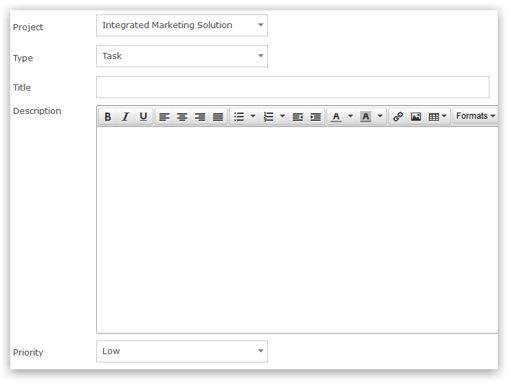
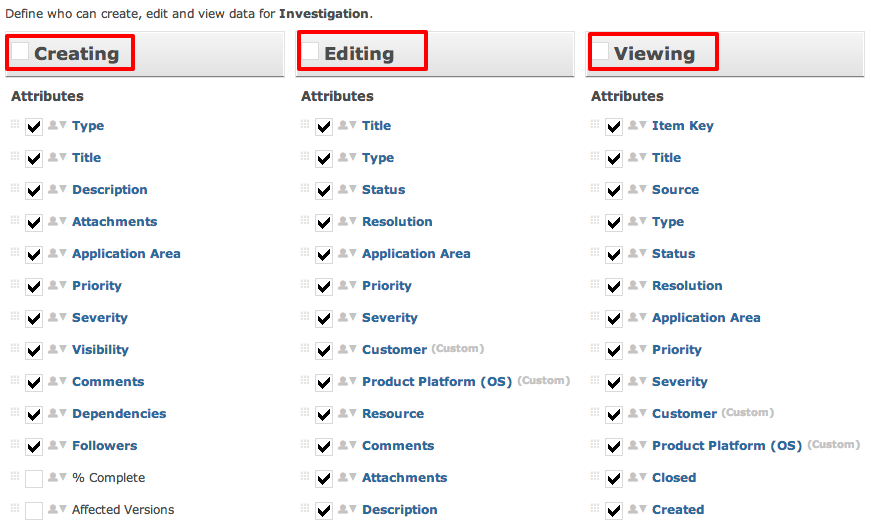

Every process can be tuned to ensure only relevant data is captured and displayed. Processes contains screens that can be enabled/disabled for a specific group, or all groups. Screens help to manage whom can view and edit specific item information and it's contents. The three columns that comprise a screen are: Creating, Editing, and Viewing*. Attributes such as item linking, sentry code review, and board overview are directly related to the screens of a process.
* The Viewing column also contains data pertaining to the content of an item.

The example screen setup (above) is controlled via the following Screen setup (below):

The following is an overview of the setup and capabilities of Screens within Gemini.